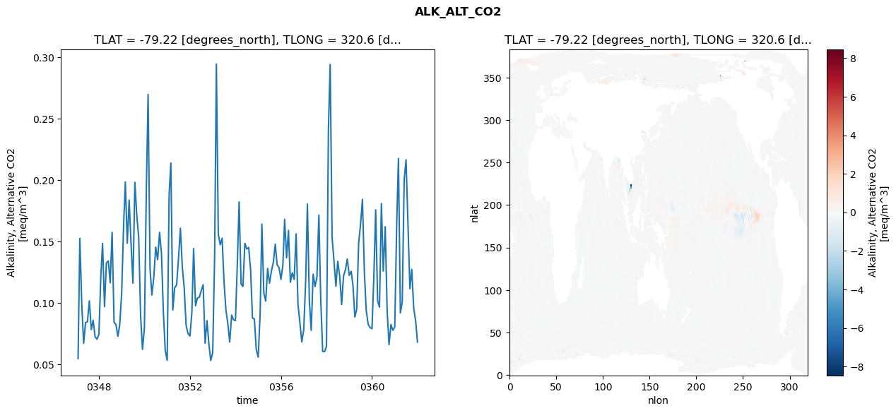
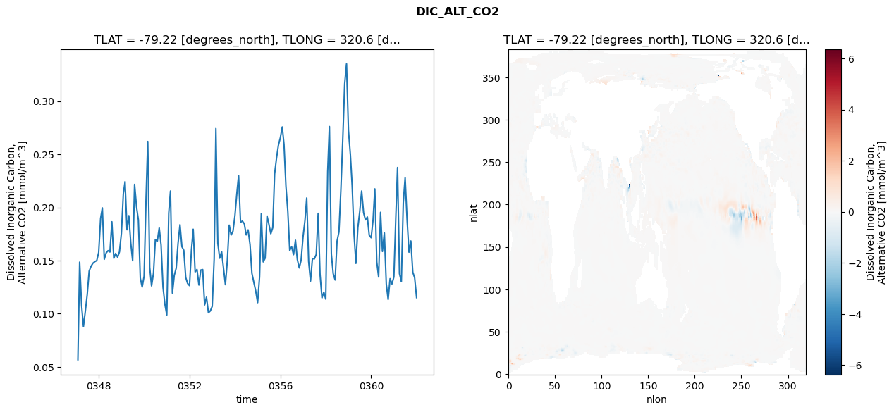
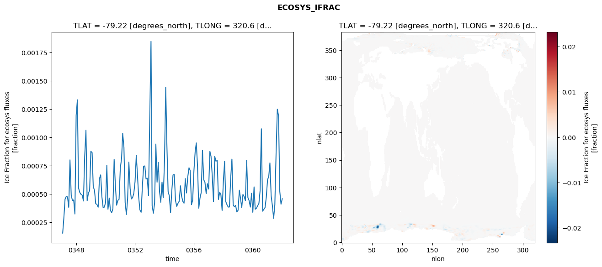
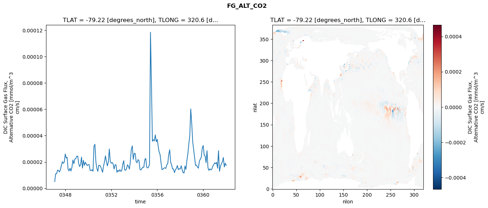

glb-dor_North_Atlantic_basin_006_1999-01-01_00024#
Simulation details#
Case: smyle.cdr-atlas-v0.glb-dor_North_Atlantic_basin_006_1999-01-01_00024.001
Basin: North_Atlantic_basin
Polygon: 6.0
Start date: 1999-01
Show code cell source Hide code cell source
import xarray as xr
import matplotlib.pyplot as plt
Show code cell source Hide code cell source
zarr_store = "/path/to/zarr/store"
# Parameters
zarr_store = "/global/cfs/projectdirs/m4746/Projects/Ocean-CDR-Atlas-v0/data/validation/smyle.cdr-atlas-v0.glb-dor_North_Atlantic_basin_006_1999-01-01_00024.001.validation.zarr"
Show code cell source Hide code cell source
%%time
ds_o = xr.open_zarr(zarr_store).compute()
ds_o
CPU times: user 655 ms, sys: 498 ms, total: 1.15 s
Wall time: 1.44 s
<xarray.Dataset> Size: 2MB
Dimensions: (nlat: 384, nlon: 320, time: 180)
Coordinates:
TLAT float64 8B -79.22
TLONG float64 8B 320.6
ULAT float64 8B -78.95
ULONG float64 8B 321.1
* time (time) object 1kB 0347-02-01 00:00:00 ... 0362-01-01 0...
z_t float32 4B 500.0
Dimensions without coordinates: nlat, nlon
Data variables:
ALK_ALT_CO2_diff (nlat, nlon) float32 492kB nan nan nan ... nan nan nan
ALK_ALT_CO2_rmse (time) float64 1kB 0.05491 0.1526 ... 0.08582 0.06828
DIC_ALT_CO2_diff (nlat, nlon) float32 492kB nan nan nan ... nan nan nan
DIC_ALT_CO2_rmse (time) float64 1kB 0.05676 0.1485 ... 0.1337 0.1152
ECOSYS_IFRAC_diff (nlat, nlon) float32 492kB nan nan nan ... nan nan nan
ECOSYS_IFRAC_rmse (time) float64 1kB 0.0001545 0.000282 ... 0.0004582
FG_ALT_CO2_diff (nlat, nlon) float32 492kB nan nan nan ... nan nan nan
FG_ALT_CO2_rmse (time) float64 1kB 5.076e-06 1.1e-05 ... 1.736e-05xarray.Dataset
- nlat: 384
- nlon: 320
- time: 180
- TLAT()float64-79.22
- long_name :
- array of t-grid latitudes
- units :
- degrees_north
array(-79.22052261)
- TLONG()float64320.6
- long_name :
- array of t-grid longitudes
- units :
- degrees_east
array(320.56250892)
- ULAT()float64-78.95
- long_name :
- array of u-grid latitudes
- units :
- degrees_north
array(-78.95289509)
- ULONG()float64321.1
- long_name :
- array of u-grid longitudes
- units :
- degrees_east
array(321.12500894)
- time(time)object0347-02-01 00:00:00 ... 0362-01-...
- bounds :
- time_bound
- long_name :
- time
array([cftime.DatetimeNoLeap(347, 2, 1, 0, 0, 0, 0, has_year_zero=True), cftime.DatetimeNoLeap(347, 3, 1, 0, 0, 0, 0, has_year_zero=True), cftime.DatetimeNoLeap(347, 4, 1, 0, 0, 0, 0, has_year_zero=True), cftime.DatetimeNoLeap(347, 5, 1, 0, 0, 0, 0, has_year_zero=True), cftime.DatetimeNoLeap(347, 6, 1, 0, 0, 0, 0, has_year_zero=True), cftime.DatetimeNoLeap(347, 7, 1, 0, 0, 0, 0, has_year_zero=True), cftime.DatetimeNoLeap(347, 8, 1, 0, 0, 0, 0, has_year_zero=True), cftime.DatetimeNoLeap(347, 9, 1, 0, 0, 0, 0, has_year_zero=True), cftime.DatetimeNoLeap(347, 10, 1, 0, 0, 0, 0, has_year_zero=True), cftime.DatetimeNoLeap(347, 11, 1, 0, 0, 0, 0, has_year_zero=True), cftime.DatetimeNoLeap(347, 12, 1, 0, 0, 0, 0, has_year_zero=True), cftime.DatetimeNoLeap(348, 1, 1, 0, 0, 0, 0, has_year_zero=True), cftime.DatetimeNoLeap(348, 2, 1, 0, 0, 0, 0, has_year_zero=True), cftime.DatetimeNoLeap(348, 3, 1, 0, 0, 0, 0, has_year_zero=True), cftime.DatetimeNoLeap(348, 4, 1, 0, 0, 0, 0, has_year_zero=True), cftime.DatetimeNoLeap(348, 5, 1, 0, 0, 0, 0, has_year_zero=True), cftime.DatetimeNoLeap(348, 6, 1, 0, 0, 0, 0, has_year_zero=True), cftime.DatetimeNoLeap(348, 7, 1, 0, 0, 0, 0, has_year_zero=True), cftime.DatetimeNoLeap(348, 8, 1, 0, 0, 0, 0, has_year_zero=True), cftime.DatetimeNoLeap(348, 9, 1, 0, 0, 0, 0, has_year_zero=True), cftime.DatetimeNoLeap(348, 10, 1, 0, 0, 0, 0, has_year_zero=True), cftime.DatetimeNoLeap(348, 11, 1, 0, 0, 0, 0, has_year_zero=True), cftime.DatetimeNoLeap(348, 12, 1, 0, 0, 0, 0, has_year_zero=True), cftime.DatetimeNoLeap(349, 1, 1, 0, 0, 0, 0, has_year_zero=True), cftime.DatetimeNoLeap(349, 2, 1, 0, 0, 0, 0, has_year_zero=True), cftime.DatetimeNoLeap(349, 3, 1, 0, 0, 0, 0, has_year_zero=True), cftime.DatetimeNoLeap(349, 4, 1, 0, 0, 0, 0, has_year_zero=True), cftime.DatetimeNoLeap(349, 5, 1, 0, 0, 0, 0, has_year_zero=True), cftime.DatetimeNoLeap(349, 6, 1, 0, 0, 0, 0, has_year_zero=True), cftime.DatetimeNoLeap(349, 7, 1, 0, 0, 0, 0, has_year_zero=True), cftime.DatetimeNoLeap(349, 8, 1, 0, 0, 0, 0, has_year_zero=True), cftime.DatetimeNoLeap(349, 9, 1, 0, 0, 0, 0, has_year_zero=True), cftime.DatetimeNoLeap(349, 10, 1, 0, 0, 0, 0, has_year_zero=True), cftime.DatetimeNoLeap(349, 11, 1, 0, 0, 0, 0, has_year_zero=True), cftime.DatetimeNoLeap(349, 12, 1, 0, 0, 0, 0, has_year_zero=True), cftime.DatetimeNoLeap(350, 1, 1, 0, 0, 0, 0, has_year_zero=True), cftime.DatetimeNoLeap(350, 2, 1, 0, 0, 0, 0, has_year_zero=True), cftime.DatetimeNoLeap(350, 3, 1, 0, 0, 0, 0, has_year_zero=True), cftime.DatetimeNoLeap(350, 4, 1, 0, 0, 0, 0, has_year_zero=True), cftime.DatetimeNoLeap(350, 5, 1, 0, 0, 0, 0, has_year_zero=True), cftime.DatetimeNoLeap(350, 6, 1, 0, 0, 0, 0, has_year_zero=True), cftime.DatetimeNoLeap(350, 7, 1, 0, 0, 0, 0, has_year_zero=True), cftime.DatetimeNoLeap(350, 8, 1, 0, 0, 0, 0, has_year_zero=True), cftime.DatetimeNoLeap(350, 9, 1, 0, 0, 0, 0, has_year_zero=True), cftime.DatetimeNoLeap(350, 10, 1, 0, 0, 0, 0, has_year_zero=True), cftime.DatetimeNoLeap(350, 11, 1, 0, 0, 0, 0, has_year_zero=True), cftime.DatetimeNoLeap(350, 12, 1, 0, 0, 0, 0, has_year_zero=True), cftime.DatetimeNoLeap(351, 1, 1, 0, 0, 0, 0, has_year_zero=True), cftime.DatetimeNoLeap(351, 2, 1, 0, 0, 0, 0, has_year_zero=True), cftime.DatetimeNoLeap(351, 3, 1, 0, 0, 0, 0, has_year_zero=True), cftime.DatetimeNoLeap(351, 4, 1, 0, 0, 0, 0, has_year_zero=True), cftime.DatetimeNoLeap(351, 5, 1, 0, 0, 0, 0, has_year_zero=True), cftime.DatetimeNoLeap(351, 6, 1, 0, 0, 0, 0, has_year_zero=True), cftime.DatetimeNoLeap(351, 7, 1, 0, 0, 0, 0, has_year_zero=True), cftime.DatetimeNoLeap(351, 8, 1, 0, 0, 0, 0, has_year_zero=True), cftime.DatetimeNoLeap(351, 9, 1, 0, 0, 0, 0, has_year_zero=True), cftime.DatetimeNoLeap(351, 10, 1, 0, 0, 0, 0, has_year_zero=True), cftime.DatetimeNoLeap(351, 11, 1, 0, 0, 0, 0, has_year_zero=True), cftime.DatetimeNoLeap(351, 12, 1, 0, 0, 0, 0, has_year_zero=True), cftime.DatetimeNoLeap(352, 1, 1, 0, 0, 0, 0, has_year_zero=True), cftime.DatetimeNoLeap(352, 2, 1, 0, 0, 0, 0, has_year_zero=True), cftime.DatetimeNoLeap(352, 3, 1, 0, 0, 0, 0, has_year_zero=True), cftime.DatetimeNoLeap(352, 4, 1, 0, 0, 0, 0, has_year_zero=True), cftime.DatetimeNoLeap(352, 5, 1, 0, 0, 0, 0, has_year_zero=True), cftime.DatetimeNoLeap(352, 6, 1, 0, 0, 0, 0, has_year_zero=True), cftime.DatetimeNoLeap(352, 7, 1, 0, 0, 0, 0, has_year_zero=True), cftime.DatetimeNoLeap(352, 8, 1, 0, 0, 0, 0, has_year_zero=True), cftime.DatetimeNoLeap(352, 9, 1, 0, 0, 0, 0, has_year_zero=True), cftime.DatetimeNoLeap(352, 10, 1, 0, 0, 0, 0, has_year_zero=True), cftime.DatetimeNoLeap(352, 11, 1, 0, 0, 0, 0, has_year_zero=True), cftime.DatetimeNoLeap(352, 12, 1, 0, 0, 0, 0, has_year_zero=True), cftime.DatetimeNoLeap(353, 1, 1, 0, 0, 0, 0, has_year_zero=True), cftime.DatetimeNoLeap(353, 2, 1, 0, 0, 0, 0, has_year_zero=True), cftime.DatetimeNoLeap(353, 3, 1, 0, 0, 0, 0, has_year_zero=True), cftime.DatetimeNoLeap(353, 4, 1, 0, 0, 0, 0, has_year_zero=True), cftime.DatetimeNoLeap(353, 5, 1, 0, 0, 0, 0, has_year_zero=True), cftime.DatetimeNoLeap(353, 6, 1, 0, 0, 0, 0, has_year_zero=True), cftime.DatetimeNoLeap(353, 7, 1, 0, 0, 0, 0, has_year_zero=True), cftime.DatetimeNoLeap(353, 8, 1, 0, 0, 0, 0, has_year_zero=True), cftime.DatetimeNoLeap(353, 9, 1, 0, 0, 0, 0, has_year_zero=True), cftime.DatetimeNoLeap(353, 10, 1, 0, 0, 0, 0, has_year_zero=True), cftime.DatetimeNoLeap(353, 11, 1, 0, 0, 0, 0, has_year_zero=True), cftime.DatetimeNoLeap(353, 12, 1, 0, 0, 0, 0, has_year_zero=True), cftime.DatetimeNoLeap(354, 1, 1, 0, 0, 0, 0, has_year_zero=True), cftime.DatetimeNoLeap(354, 2, 1, 0, 0, 0, 0, has_year_zero=True), cftime.DatetimeNoLeap(354, 3, 1, 0, 0, 0, 0, has_year_zero=True), cftime.DatetimeNoLeap(354, 4, 1, 0, 0, 0, 0, has_year_zero=True), cftime.DatetimeNoLeap(354, 5, 1, 0, 0, 0, 0, has_year_zero=True), cftime.DatetimeNoLeap(354, 6, 1, 0, 0, 0, 0, has_year_zero=True), cftime.DatetimeNoLeap(354, 7, 1, 0, 0, 0, 0, has_year_zero=True), cftime.DatetimeNoLeap(354, 8, 1, 0, 0, 0, 0, has_year_zero=True), cftime.DatetimeNoLeap(354, 9, 1, 0, 0, 0, 0, has_year_zero=True), cftime.DatetimeNoLeap(354, 10, 1, 0, 0, 0, 0, has_year_zero=True), cftime.DatetimeNoLeap(354, 11, 1, 0, 0, 0, 0, has_year_zero=True), cftime.DatetimeNoLeap(354, 12, 1, 0, 0, 0, 0, has_year_zero=True), cftime.DatetimeNoLeap(355, 1, 1, 0, 0, 0, 0, has_year_zero=True), cftime.DatetimeNoLeap(355, 2, 1, 0, 0, 0, 0, has_year_zero=True), cftime.DatetimeNoLeap(355, 3, 1, 0, 0, 0, 0, has_year_zero=True), cftime.DatetimeNoLeap(355, 4, 1, 0, 0, 0, 0, has_year_zero=True), cftime.DatetimeNoLeap(355, 5, 1, 0, 0, 0, 0, has_year_zero=True), cftime.DatetimeNoLeap(355, 6, 1, 0, 0, 0, 0, has_year_zero=True), cftime.DatetimeNoLeap(355, 7, 1, 0, 0, 0, 0, has_year_zero=True), cftime.DatetimeNoLeap(355, 8, 1, 0, 0, 0, 0, has_year_zero=True), cftime.DatetimeNoLeap(355, 9, 1, 0, 0, 0, 0, has_year_zero=True), cftime.DatetimeNoLeap(355, 10, 1, 0, 0, 0, 0, has_year_zero=True), cftime.DatetimeNoLeap(355, 11, 1, 0, 0, 0, 0, has_year_zero=True), cftime.DatetimeNoLeap(355, 12, 1, 0, 0, 0, 0, has_year_zero=True), cftime.DatetimeNoLeap(356, 1, 1, 0, 0, 0, 0, has_year_zero=True), cftime.DatetimeNoLeap(356, 2, 1, 0, 0, 0, 0, has_year_zero=True), cftime.DatetimeNoLeap(356, 3, 1, 0, 0, 0, 0, has_year_zero=True), cftime.DatetimeNoLeap(356, 4, 1, 0, 0, 0, 0, has_year_zero=True), cftime.DatetimeNoLeap(356, 5, 1, 0, 0, 0, 0, has_year_zero=True), cftime.DatetimeNoLeap(356, 6, 1, 0, 0, 0, 0, has_year_zero=True), cftime.DatetimeNoLeap(356, 7, 1, 0, 0, 0, 0, has_year_zero=True), cftime.DatetimeNoLeap(356, 8, 1, 0, 0, 0, 0, has_year_zero=True), cftime.DatetimeNoLeap(356, 9, 1, 0, 0, 0, 0, has_year_zero=True), cftime.DatetimeNoLeap(356, 10, 1, 0, 0, 0, 0, has_year_zero=True), cftime.DatetimeNoLeap(356, 11, 1, 0, 0, 0, 0, has_year_zero=True), cftime.DatetimeNoLeap(356, 12, 1, 0, 0, 0, 0, has_year_zero=True), cftime.DatetimeNoLeap(357, 1, 1, 0, 0, 0, 0, has_year_zero=True), cftime.DatetimeNoLeap(357, 2, 1, 0, 0, 0, 0, has_year_zero=True), cftime.DatetimeNoLeap(357, 3, 1, 0, 0, 0, 0, has_year_zero=True), cftime.DatetimeNoLeap(357, 4, 1, 0, 0, 0, 0, has_year_zero=True), cftime.DatetimeNoLeap(357, 5, 1, 0, 0, 0, 0, has_year_zero=True), cftime.DatetimeNoLeap(357, 6, 1, 0, 0, 0, 0, has_year_zero=True), cftime.DatetimeNoLeap(357, 7, 1, 0, 0, 0, 0, has_year_zero=True), cftime.DatetimeNoLeap(357, 8, 1, 0, 0, 0, 0, has_year_zero=True), cftime.DatetimeNoLeap(357, 9, 1, 0, 0, 0, 0, has_year_zero=True), cftime.DatetimeNoLeap(357, 10, 1, 0, 0, 0, 0, has_year_zero=True), cftime.DatetimeNoLeap(357, 11, 1, 0, 0, 0, 0, has_year_zero=True), cftime.DatetimeNoLeap(357, 12, 1, 0, 0, 0, 0, has_year_zero=True), cftime.DatetimeNoLeap(358, 1, 1, 0, 0, 0, 0, has_year_zero=True), cftime.DatetimeNoLeap(358, 2, 1, 0, 0, 0, 0, has_year_zero=True), cftime.DatetimeNoLeap(358, 3, 1, 0, 0, 0, 0, has_year_zero=True), cftime.DatetimeNoLeap(358, 4, 1, 0, 0, 0, 0, has_year_zero=True), cftime.DatetimeNoLeap(358, 5, 1, 0, 0, 0, 0, has_year_zero=True), cftime.DatetimeNoLeap(358, 6, 1, 0, 0, 0, 0, has_year_zero=True), cftime.DatetimeNoLeap(358, 7, 1, 0, 0, 0, 0, has_year_zero=True), cftime.DatetimeNoLeap(358, 8, 1, 0, 0, 0, 0, has_year_zero=True), cftime.DatetimeNoLeap(358, 9, 1, 0, 0, 0, 0, has_year_zero=True), cftime.DatetimeNoLeap(358, 10, 1, 0, 0, 0, 0, has_year_zero=True), cftime.DatetimeNoLeap(358, 11, 1, 0, 0, 0, 0, has_year_zero=True), cftime.DatetimeNoLeap(358, 12, 1, 0, 0, 0, 0, has_year_zero=True), cftime.DatetimeNoLeap(359, 1, 1, 0, 0, 0, 0, has_year_zero=True), cftime.DatetimeNoLeap(359, 2, 1, 0, 0, 0, 0, has_year_zero=True), cftime.DatetimeNoLeap(359, 3, 1, 0, 0, 0, 0, has_year_zero=True), cftime.DatetimeNoLeap(359, 4, 1, 0, 0, 0, 0, has_year_zero=True), cftime.DatetimeNoLeap(359, 5, 1, 0, 0, 0, 0, has_year_zero=True), cftime.DatetimeNoLeap(359, 6, 1, 0, 0, 0, 0, has_year_zero=True), cftime.DatetimeNoLeap(359, 7, 1, 0, 0, 0, 0, has_year_zero=True), cftime.DatetimeNoLeap(359, 8, 1, 0, 0, 0, 0, has_year_zero=True), cftime.DatetimeNoLeap(359, 9, 1, 0, 0, 0, 0, has_year_zero=True), cftime.DatetimeNoLeap(359, 10, 1, 0, 0, 0, 0, has_year_zero=True), cftime.DatetimeNoLeap(359, 11, 1, 0, 0, 0, 0, has_year_zero=True), cftime.DatetimeNoLeap(359, 12, 1, 0, 0, 0, 0, has_year_zero=True), cftime.DatetimeNoLeap(360, 1, 1, 0, 0, 0, 0, has_year_zero=True), cftime.DatetimeNoLeap(360, 2, 1, 0, 0, 0, 0, has_year_zero=True), cftime.DatetimeNoLeap(360, 3, 1, 0, 0, 0, 0, has_year_zero=True), cftime.DatetimeNoLeap(360, 4, 1, 0, 0, 0, 0, has_year_zero=True), cftime.DatetimeNoLeap(360, 5, 1, 0, 0, 0, 0, has_year_zero=True), cftime.DatetimeNoLeap(360, 6, 1, 0, 0, 0, 0, has_year_zero=True), cftime.DatetimeNoLeap(360, 7, 1, 0, 0, 0, 0, has_year_zero=True), cftime.DatetimeNoLeap(360, 8, 1, 0, 0, 0, 0, has_year_zero=True), cftime.DatetimeNoLeap(360, 9, 1, 0, 0, 0, 0, has_year_zero=True), cftime.DatetimeNoLeap(360, 10, 1, 0, 0, 0, 0, has_year_zero=True), cftime.DatetimeNoLeap(360, 11, 1, 0, 0, 0, 0, has_year_zero=True), cftime.DatetimeNoLeap(360, 12, 1, 0, 0, 0, 0, has_year_zero=True), cftime.DatetimeNoLeap(361, 1, 1, 0, 0, 0, 0, has_year_zero=True), cftime.DatetimeNoLeap(361, 2, 1, 0, 0, 0, 0, has_year_zero=True), cftime.DatetimeNoLeap(361, 3, 1, 0, 0, 0, 0, has_year_zero=True), cftime.DatetimeNoLeap(361, 4, 1, 0, 0, 0, 0, has_year_zero=True), cftime.DatetimeNoLeap(361, 5, 1, 0, 0, 0, 0, has_year_zero=True), cftime.DatetimeNoLeap(361, 6, 1, 0, 0, 0, 0, has_year_zero=True), cftime.DatetimeNoLeap(361, 7, 1, 0, 0, 0, 0, has_year_zero=True), cftime.DatetimeNoLeap(361, 8, 1, 0, 0, 0, 0, has_year_zero=True), cftime.DatetimeNoLeap(361, 9, 1, 0, 0, 0, 0, has_year_zero=True), cftime.DatetimeNoLeap(361, 10, 1, 0, 0, 0, 0, has_year_zero=True), cftime.DatetimeNoLeap(361, 11, 1, 0, 0, 0, 0, has_year_zero=True), cftime.DatetimeNoLeap(361, 12, 1, 0, 0, 0, 0, has_year_zero=True), cftime.DatetimeNoLeap(362, 1, 1, 0, 0, 0, 0, has_year_zero=True)], dtype=object) - z_t()float32500.0
- long_name :
- depth from surface to midpoint of layer
- positive :
- down
- units :
- centimeters
- valid_max :
- 537500.0
- valid_min :
- 500.0
array(500., dtype=float32)
- ALK_ALT_CO2_diff(nlat, nlon)float32nan nan nan nan ... nan nan nan nan
- cell_methods :
- time: mean
- grid_loc :
- 3111
- long_name :
- Alkalinity, Alternative CO2
- units :
- meq/m^3
array([[ nan, nan, nan, ..., nan, nan, nan], [ nan, nan, nan, ..., nan, nan, nan], [-0.01904297, -0.01586914, -0.01147461, ..., nan, nan, nan], ..., [ nan, nan, nan, ..., nan, nan, nan], [ nan, nan, nan, ..., nan, nan, nan], [ nan, nan, nan, ..., nan, nan, nan]], dtype=float32) - ALK_ALT_CO2_rmse(time)float640.05491 0.1526 ... 0.08582 0.06828
- cell_methods :
- time: mean
- grid_loc :
- 3111
- long_name :
- Alkalinity, Alternative CO2
- units :
- meq/m^3
array([0.05490721, 0.15261327, 0.09961302, 0.06725502, 0.08420943, 0.08474544, 0.10179737, 0.07839033, 0.0860039 , 0.07255449, 0.07064952, 0.07453313, 0.12219947, 0.14858476, 0.09715423, 0.13267636, 0.13423153, 0.11648902, 0.15751608, 0.08435425, 0.08263354, 0.07297691, 0.08249188, 0.10784623, 0.16301995, 0.19846133, 0.14864996, 0.18373108, 0.14810042, 0.11618561, 0.19814209, 0.17088504, 0.15373689, 0.08958518, 0.06232664, 0.07993891, 0.19311848, 0.26966566, 0.12793944, 0.1066094 , 0.12137338, 0.14555259, 0.13525582, 0.15752529, 0.14079456, 0.09255156, 0.06138465, 0.05350729, 0.18794507, 0.21387328, 0.09440056, 0.11234036, 0.11482141, 0.13571107, 0.1608775 , 0.12902979, 0.11239607, 0.08163997, 0.0752427 , 0.0732524 , 0.09218457, 0.14435398, 0.09786823, 0.10418886, 0.10472708, 0.11005152, 0.11494385, 0.06739002, 0.08570347, 0.06665463, 0.05326244, 0.05990151, 0.13785986, 0.29435718, 0.155998 , 0.14743829, 0.15273984, 0.11778054, 0.09442074, 0.08318831, 0.0683302 , 0.09030149, 0.0863883 , 0.08578145, 0.13388586, 0.18227973, 0.11555877, 0.11340348, 0.14866138, 0.14399105, 0.14523541, 0.12720866, 0.08777467, 0.08707883, 0.06195378, 0.05603544, 0.09161431, 0.16415111, 0.10818044, 0.10165928, 0.12814045, 0.11619161, 0.12607706, 0.13330153, 0.14783699, 0.13100971, 0.12883665, 0.11928842, 0.13124384, 0.16800285, 0.13680757, 0.15912225, 0.11693995, 0.12463801, 0.11927356, 0.1563083 , 0.09867032, 0.08398274, 0.06840672, 0.07825992, 0.11765624, 0.18052837, 0.10206875, 0.07784651, 0.12350455, 0.11341557, 0.12146315, 0.17158265, 0.10253936, 0.06063171, 0.06048507, 0.06470785, 0.24122248, 0.29404807, 0.15329832, 0.13440535, 0.1137333 , 0.13398553, 0.12191916, 0.09883404, 0.12196644, 0.12716229, 0.13582233, 0.12248216, 0.12588525, 0.1146853 , 0.08868001, 0.09504746, 0.14868347, 0.16377733, 0.18432242, 0.12426029, 0.09361935, 0.08271492, 0.08004074, 0.07914945, 0.12388173, 0.17579582, 0.10176161, 0.09675363, 0.1809072 , 0.12601034, 0.1620719 , 0.09342767, 0.06622316, 0.08262408, 0.07784381, 0.08056456, 0.16395811, 0.21763001, 0.09196118, 0.10070369, 0.20033474, 0.2164859 , 0.16434321, 0.11165226, 0.12735321, 0.09575657, 0.0858165 , 0.06828472]) - DIC_ALT_CO2_diff(nlat, nlon)float32nan nan nan nan ... nan nan nan nan
- cell_methods :
- time: mean
- grid_loc :
- 3111
- long_name :
- Dissolved Inorganic Carbon, Alternative CO2
- units :
- mmol/m^3
array([[ nan, nan, nan, ..., nan, nan, nan], [ nan, nan, nan, ..., nan, nan, nan], [-0.02734375, -0.02246094, -0.01147461, ..., nan, nan, nan], ..., [ nan, nan, nan, ..., nan, nan, nan], [ nan, nan, nan, ..., nan, nan, nan], [ nan, nan, nan, ..., nan, nan, nan]], dtype=float32) - DIC_ALT_CO2_rmse(time)float640.05676 0.1485 ... 0.1337 0.1152
- cell_methods :
- time: mean
- grid_loc :
- 3111
- long_name :
- Dissolved Inorganic Carbon, Alternative CO2
- units :
- mmol/m^3
array([0.05675913, 0.14852958, 0.10794371, 0.08802413, 0.10274944, 0.11808572, 0.14015722, 0.14472278, 0.14758122, 0.14905035, 0.15000142, 0.15758446, 0.18976157, 0.1995738 , 0.15124727, 0.15717879, 0.15937707, 0.1580893 , 0.186523 , 0.15217657, 0.15671241, 0.1531826 , 0.15821757, 0.17559142, 0.21264331, 0.22430515, 0.17897314, 0.19224407, 0.16628137, 0.14986742, 0.22169177, 0.20070111, 0.18836138, 0.13349461, 0.1251015 , 0.13534003, 0.20741901, 0.26205892, 0.14368547, 0.12621087, 0.13818523, 0.16982033, 0.16816325, 0.18070482, 0.16463668, 0.12490732, 0.10913234, 0.09884915, 0.19463311, 0.21544956, 0.11938729, 0.13619924, 0.142887 , 0.16645626, 0.18379404, 0.1630167 , 0.15973811, 0.13415085, 0.12852106, 0.12645128, 0.16000737, 0.17948119, 0.13935208, 0.14171908, 0.12702671, 0.14110682, 0.14158178, 0.1083436 , 0.11560351, 0.10092044, 0.10261513, 0.10697813, 0.15145688, 0.27425876, 0.16624738, 0.15223104, 0.15838577, 0.14306026, 0.12733644, 0.15016501, 0.1833407 , 0.17403339, 0.17778089, 0.19221639, 0.2132487 , 0.22987706, 0.18607219, 0.18719851, 0.18460655, 0.17414867, 0.17891568, 0.1650274 , 0.13806329, 0.12943608, 0.12149107, 0.1104257 , 0.13455884, 0.19418241, 0.14877841, 0.15222564, 0.19201102, 0.18427605, 0.17524551, 0.18096329, 0.23153013, 0.24665395, 0.25852593, 0.26562464, 0.27570182, 0.25924829, 0.22001751, 0.19652023, 0.15954168, 0.1629958 , 0.1555541 , 0.1691702 , 0.15102542, 0.14306878, 0.15036198, 0.17243077, 0.18789578, 0.20890591, 0.14920565, 0.13073169, 0.15202288, 0.15150003, 0.15579012, 0.1944805 , 0.13715056, 0.11493033, 0.12034319, 0.11371652, 0.23385213, 0.2761198 , 0.15609228, 0.13759827, 0.13170762, 0.1681245 , 0.17691007, 0.21665966, 0.26330459, 0.31621461, 0.33505645, 0.27256287, 0.24948001, 0.22077198, 0.17432318, 0.14739147, 0.18093128, 0.1959177 , 0.21546233, 0.19505018, 0.18831051, 0.19103375, 0.1738412 , 0.17147717, 0.18869128, 0.21746743, 0.14870935, 0.13454289, 0.19540736, 0.15860035, 0.1759997 , 0.12801307, 0.11344536, 0.13300762, 0.12801122, 0.13454433, 0.19053899, 0.23756918, 0.13776371, 0.13017591, 0.20431217, 0.22794072, 0.18883451, 0.15791385, 0.16844285, 0.13915294, 0.13372754, 0.11515273]) - ECOSYS_IFRAC_diff(nlat, nlon)float32nan nan nan nan ... nan nan nan nan
- cell_methods :
- time: mean
- grid_loc :
- 2110
- long_name :
- Ice Fraction for ecosys fluxes
- units :
- fraction
array([[ nan, nan, nan, ..., nan, nan, nan], [ nan, nan, nan, ..., nan, nan, nan], [ 4.4703484e-06, -9.9480152e-05, -6.5565109e-07, ..., nan, nan, nan], ..., [ nan, nan, nan, ..., nan, nan, nan], [ nan, nan, nan, ..., nan, nan, nan], [ nan, nan, nan, ..., nan, nan, nan]], dtype=float32) - ECOSYS_IFRAC_rmse(time)float640.0001545 0.000282 ... 0.0004582
- cell_methods :
- time: mean
- grid_loc :
- 2110
- long_name :
- Ice Fraction for ecosys fluxes
- units :
- fraction
array([0.00015447, 0.00028198, 0.00045491, 0.00047837, 0.00047448, 0.00038262, 0.00080162, 0.00048799, 0.00044238, 0.00044707, 0.0003235 , 0.00119462, 0.00133222, 0.00055404, 0.00051347, 0.00049719, 0.00048896, 0.00043854, 0.0008339 , 0.00106335, 0.00044043, 0.00050777, 0.00053068, 0.00087735, 0.00086588, 0.00056486, 0.00053253, 0.00041439, 0.0004078 , 0.00038342, 0.00063537, 0.00066915, 0.00047684, 0.00038001, 0.00038446, 0.00042631, 0.00075316, 0.00036489, 0.00046438, 0.00035454, 0.00033472, 0.00036965, 0.00080544, 0.00057541, 0.00040126, 0.00044358, 0.00045271, 0.00072982, 0.00081289, 0.00103602, 0.00091103, 0.00042325, 0.0003193 , 0.0004583 , 0.00078165, 0.00054918, 0.00045611, 0.00046758, 0.00050486, 0.00060804, 0.00084008, 0.00067492, 0.00047498, 0.00036004, 0.00033854, 0.00055861, 0.00074529, 0.00074816, 0.00063212, 0.00063919, 0.00048651, 0.00116246, 0.00184884, 0.00039741, 0.00033062, 0.0004204 , 0.00094144, 0.00060448, 0.0007787 , 0.00051896, 0.0004274 , 0.00060493, 0.00046723, 0.00078636, 0.00144258, 0.000943 , 0.00052286, 0.00048316, 0.00033597, 0.00052777, 0.00066837, 0.00067204, 0.00044222, 0.00039122, 0.00041758, 0.00043604, 0.00057234, 0.00048159, 0.0004353 , 0.00041872, 0.00063597, 0.00050919, 0.00065082, 0.00073191, 0.00070623, 0.00040599, 0.00044563, 0.00070618, 0.0008754 , 0.00095136, 0.00074197, 0.00037456, 0.00046498, 0.0005136 , 0.0008853 , 0.00062621, 0.00060378, 0.00050346, 0.00059092, 0.0005438 , 0.00087672, 0.00083208, 0.00065731, 0.00043235, 0.00083183, 0.00078986, 0.00079687, 0.00045209, 0.00051661, 0.00049365, 0.00035497, 0.00061404, 0.00078817, 0.00043406, 0.00040467, 0.00038489, 0.00038575, 0.00063638, 0.00080898, 0.0004041 , 0.0003868 , 0.0003997 , 0.00034176, 0.00035662, 0.00053385, 0.00046443, 0.00037892, 0.00049603, 0.00047654, 0.00044159, 0.00079767, 0.00046855, 0.00044176, 0.00038479, 0.00050625, 0.00033831, 0.00056316, 0.00036537, 0.00037442, 0.00039613, 0.00041705, 0.00053057, 0.0010763 , 0.00034836, 0.0003643 , 0.00038068, 0.00047099, 0.00062441, 0.00065863, 0.00077465, 0.00048359, 0.00039751, 0.00028463, 0.00040494, 0.00086008, 0.00124962, 0.00119131, 0.00052239, 0.00040992, 0.00045819]) - FG_ALT_CO2_diff(nlat, nlon)float32nan nan nan nan ... nan nan nan nan
- cell_methods :
- time: mean
- grid_loc :
- 2110
- long_name :
- DIC Surface Gas Flux, Alternative CO2
- units :
- mmol/m^3 cm/s
array([[ nan, nan, nan, ..., nan, nan, nan], [ nan, nan, nan, ..., nan, nan, nan], [2.6933776e-08, 1.0624012e-07, 3.5561925e-08, ..., nan, nan, nan], ..., [ nan, nan, nan, ..., nan, nan, nan], [ nan, nan, nan, ..., nan, nan, nan], [ nan, nan, nan, ..., nan, nan, nan]], dtype=float32) - FG_ALT_CO2_rmse(time)float645.076e-06 1.1e-05 ... 1.736e-05
- cell_methods :
- time: mean
- grid_loc :
- 2110
- long_name :
- DIC Surface Gas Flux, Alternative CO2
- units :
- mmol/m^3 cm/s
array([5.07586341e-06, 1.10037316e-05, 1.10119369e-05, 1.38154284e-05, 1.34863963e-05, 1.23545377e-05, 1.41867641e-05, 1.73878631e-05, 2.01795674e-05, 1.90058985e-05, 1.98888171e-05, 2.60747654e-05, 2.29869014e-05, 2.35598465e-05, 1.43764740e-05, 1.31835360e-05, 1.52042135e-05, 1.31124223e-05, 1.59492232e-05, 2.15259360e-05, 1.86255199e-05, 2.22208210e-05, 2.25620317e-05, 2.43821007e-05, 2.43988233e-05, 1.90993726e-05, 1.65116541e-05, 1.78244251e-05, 2.37039332e-05, 1.53082651e-05, 2.12717017e-05, 1.73864688e-05, 1.97952499e-05, 1.82927393e-05, 1.72688954e-05, 1.79237186e-05, 1.78755214e-05, 1.36054628e-05, 1.34114027e-05, 1.41315444e-05, 1.29125528e-05, 3.18651126e-05, 3.34514967e-05, 1.99145716e-05, 1.50745242e-05, 1.28626510e-05, 1.75076218e-05, 1.74470653e-05, 1.63262487e-05, 1.43571535e-05, 1.21359530e-05, 1.68344214e-05, 2.01012897e-05, 2.46300189e-05, 2.03185185e-05, 1.69531248e-05, 2.01171191e-05, 2.99075319e-05, 2.03228641e-05, 1.90552691e-05, 1.95939320e-05, 1.85508737e-05, 1.45756610e-05, 1.78033409e-05, 1.79047725e-05, 1.21336841e-05, 1.36361623e-05, 1.27795468e-05, 1.41516275e-05, 1.27815368e-05, 1.34845195e-05, 1.81536914e-05, 2.09768233e-05, 1.40786580e-05, 1.36588311e-05, 1.47137884e-05, 1.78906834e-05, 1.67412083e-05, 1.45656547e-05, 2.08625379e-05, ... 1.18585462e-04, 7.91355401e-05, 3.57235847e-05, 3.69271481e-05, 3.60109448e-05, 4.06015335e-05, 3.53346566e-05, 3.72122955e-05, 3.17860474e-05, 2.76423344e-05, 2.56549615e-05, 1.95018756e-05, 1.41632606e-05, 1.45093153e-05, 1.53351341e-05, 1.55696630e-05, 1.50930284e-05, 1.77810785e-05, 1.88377841e-05, 2.57971086e-05, 2.92836592e-05, 2.00285635e-05, 1.79345120e-05, 1.46889112e-05, 1.46556461e-05, 1.18701000e-05, 1.39936913e-05, 1.51469717e-05, 1.72771456e-05, 1.41686923e-05, 1.48825280e-05, 1.46096462e-05, 1.71226723e-05, 1.42409259e-05, 1.19182752e-05, 1.15356853e-05, 1.69138953e-05, 1.43195662e-05, 2.12118776e-05, 2.63763080e-05, 3.37033492e-05, 4.02454570e-05, 6.03471931e-05, 4.92564340e-05, 3.54011632e-05, 2.98702935e-05, 2.35602322e-05, 1.74128992e-05, 1.76155560e-05, 1.61993018e-05, 1.52171772e-05, 2.06682729e-05, 2.20923643e-05, 2.36221264e-05, 3.06601637e-05, 3.25051240e-05, 2.50534112e-05, 2.46732990e-05, 1.93976616e-05, 2.85481345e-05, 1.54855364e-05, 1.35847164e-05, 1.48117370e-05, 1.39235198e-05, 1.44898829e-05, 1.67403645e-05, 1.79234889e-05, 1.93774379e-05, 1.86223990e-05, 1.97582114e-05, 1.52563345e-05, 2.85988949e-05, 1.28930962e-05, 1.67741169e-05, 1.84651948e-05, 2.01155583e-05, 2.34357800e-05, 1.61792630e-05, 1.90874670e-05, 1.73590855e-05])
- timePandasIndex
PandasIndex(CFTimeIndex([0347-02-01 00:00:00, 0347-03-01 00:00:00, 0347-04-01 00:00:00, 0347-05-01 00:00:00, 0347-06-01 00:00:00, 0347-07-01 00:00:00, 0347-08-01 00:00:00, 0347-09-01 00:00:00, 0347-10-01 00:00:00, 0347-11-01 00:00:00, ... 0361-04-01 00:00:00, 0361-05-01 00:00:00, 0361-06-01 00:00:00, 0361-07-01 00:00:00, 0361-08-01 00:00:00, 0361-09-01 00:00:00, 0361-10-01 00:00:00, 0361-11-01 00:00:00, 0361-12-01 00:00:00, 0362-01-01 00:00:00], dtype='object', length=180, calendar='noleap', freq='MS'))
Show code cell source Hide code cell source
variables = [v[:-5] for v in ds_o.variables if "_rmse" in v]
Show code cell source Hide code cell source
plt.rcParams.update({'figure.max_open_warning': 0})
for v in variables:
fig, axs = plt.subplots(1, 2, figsize=(15, 6))
ds_o[f"{v}_rmse"].plot(ax=axs[0])
ds_o[f"{v}_diff"].plot(ax=axs[1])
plt.suptitle(v, fontweight="bold")



